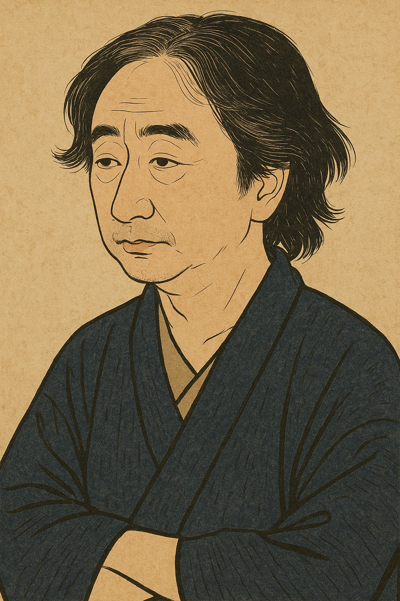

自己紹介
◆
プロフィール
入社後約13年間、PA／FA向けコントローラの組込みプログラム開発に携わり、上流設計から詳細設計、コーディング、テストまで一連の工程を経験しました。最終的にはチームリーダとしてメンバの育成や工程管理も担いました。
その後、社内IT部門に異動し、退職までの15年間はプロジェクトマネージャとして、主管元部門と協力しながら企画・開発・運用まで社内システム導入の全フェーズをリードしました。
現在は、Webエンジニアとして再びモノづくりの現場に立ち、これまでの経験を活かしながら社会に貢献したいと考えています。
スキル
- HTML、CSS、JavaScript、PHP
- 職業訓練校にてWeb開発の基礎を体系的に学習(2025年5月～11月修了予定)
- 過去に経験
- アセンブリ言語、BASIC、C言語、Visual C++
求職にあたって
私は退職までの15年間、社内IT部門のプロジェクトマネージャ(PM)として働いてきました。その際の私のモットーは、「最後までやり遂げること」と「新しい技術への挑戦」の2つです。
1．最後までやり遂げること
私が仕事で大切にしていることの一つは、さまざまな制約条件の中でもバランスを取りながら、必ず成果を出すという姿勢です。プロジェクトには常に、納期・予算・人員・品質といった制約があります。その中で私は、主管元部門やプロジェクトオーナの意向、組織のルールを踏まえながら、「何を実現すべきか」、「そのために何を優先すべきか」を常に考え、可能な限り多くのステークホルダが満足できる成果を出すことを重視してきました。
もちろん、計画通り進むプロジェクトばかりではありません。プロジェクト後半での仕様変更や、新技術導入に伴う予期せぬ課題によって、納期が危ぶまれることもありました。
そのため、主管元のチームメンバと協力し、リリース前日に主管元責任者の決裁印をもらいにいったこともあります。また、当初予定していた機能すべてのリリースが間に合わないと判断した案件では、所属事業部長の理解と承認を得て、段階リリースで乗り切ったこともあります。
すべてのプロジェクトが完璧な成功だったとは言えませんが、常に最適解を探り、制約の中でも最大限の成果を出すために努力してきました。
2．新しい技術への挑戦
自分自身、新しい技術を勉強することが好きですが、社内IT部門の1つの役割として、自社や他社の新しい技術を導入・評価するというものがあります。
たとえば、グローバルで約15万人が利用するe-Learningシステムでは、社内として初めて大規模にSaaSを導入しました。
また、データ分析基盤の構築プロジェクトでは、Dockerを用いたコンテナ技術を導入し、5営業日でユーザ向けの分析環境を提供する仕組みを実現しました。さらにその後、Kubernetesを利用し、同等の基盤をボタン1つ・10分で構築できる環境へと改善させました。これは社内のクラウド開発部門のサービス提供を評価するという面もありました。この分析環境は、最終的にはMicrosoft
Azure上で同等の環境を提供するサービスへと進化し、運用効率向上やコスト低減を実現しました。
こうした新技術の導入・定着は、一人の力では成し得ません。チームメンバのスキルアップ、そして他部署との連携があってこそ実現できた成果です。新しい技術への挑戦を快く受け入れ、支援してくれた組織の理解にも深く感謝しています。
3．今後の展望
これまで15年間、マネージャとして多くのプロジェクトを推進してきましたが、役職が上がるにつれて、日々の業務がマネジメント中心となり、自ら「モノづくり」に携わる機会が少なくなっていきました。その中で、「自分にとって働くことの意義とは何か」を改めて考えた結果、もう一度、モノづくりの現場に立ち返り、プログラマとして現場で手を動かしながら成果を出したいという想いに至りました。
そのため、2024年12月に退職し、2025年5月からは職業訓練校でHTML・CSS・JavaScript・PHPなどのWebプログラミングを体系的に学んでいます(2025年11月修了予定)。Web分野は利用者との接点が多く、今後もニーズの変化とともに発展していく領域であり、私が再び「モノづくり」に携わる舞台として最適だと感じています。
一方で、これまでの経験で培ったマネジメントスキルや全体最適の視点、そして新技術の導入・製品選定の経験は、プログラマとして働くうえでも強みになると考えています。特に、チームメンバとの円滑なコミュニケーションや、関係者間の情報整理・意思疎通の促進といった人的スキルを活かし、開発現場の連携や作業をスムーズに進めることに貢献できると考えています。
今後は、現場の一員として新しい技術を積極的に吸収しながら、チームがより良い成果を出せるよう、技術面だけでなく、人と人をつなぐ力の面からも貢献していきたいと考えています。